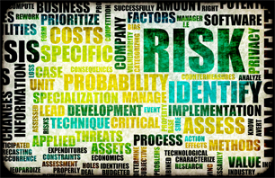
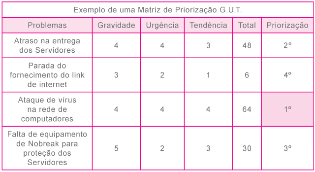

A análise de riscos tem por objetivo responder a uma série de perguntas necessárias para a identificação de possíveis riscos que uma situação de insegurança gera para um determinado processo ou para alguma atividade qualquer da empresa.
Podemos começar o nosso trabalho com perguntas, dentre as quais poderíamos citar:
- O que pode acontecer de errado?
- Com que frequência isso pode acontecer?
- Quais as suas possíveis consequências?
- O que precisa ser feito para que se possa reduzir os riscos?
- Devo ou não aceitar esse risco?
- O que, como e onde devo priorizar as ações de segurança?
- O que, quando e como devo ignorar um incidente de segurança?
Fazer uma análise de risco às cegas significa se autoenganar, pois os problemas identificados não estarão de acordo com a realidade da empresa e não poderão ser validados quando forem questionados por parte de outras pessoas envolvidas no processo.
A seguir, será apresentado um resumo das principais técnicas que poderão auxiliar o profissional de segurança na realização de sua atividade de análise de risco.
Subjetividade
Neste tipo de cenário a análise de risco é feita por cenários e suposições, sem ter meios adequados para provar os valores, e as informações apresentadas por parte dos envolvidos são realmente verdadeiras e podem realmente ocorrer. Pelo fato de envolver o julgamento subjetivo em todos os estágios, dizemos que este tipo de análise não é preciso. Procura-se com esse tipo chegar a valores aproximados, de forma a auxiliar na tomada de decisões.
Analisar quantitativamente
Neste tipo de análise, procura-se quantificar, ou seja, calcular os valores para cada um dos itens coletados durante as fases da avaliação do risco. Nesse cenário eram observados os valores reais de cada ativo existente nos processos de negócios da organização, em termos do custo de substituição e também ligados à perda de produtividade.
Analisar qualitativamente
Este tipo de técnica de análise de risco procura utilizar critérios para estimar os impactos aos negócios, provocados pela exploração das vulnerabilidades dos ativos por parte de ameaças. Procura-se com esta técnica utilizar critérios e classificações que podem abranger ao mesmo tempo valores tangíveis (o que você consegue ver e tocar) e intangíveis (algo não fisico, como o abalo da imagem de uma organização).
Grande parte das empresas prefere esse tipo de técnica, pois acreditam que se consegue quantificar melhor os impactos que a empresa poderá sofrer por meio da exploração das suas vulnerabilidades.
Análise preliminar de perigos (APP)
É um tipo de técnica qualitativa que tem como objetivo a identificação dos possíveis cenários de acidentes que podem ocorrer em uma determinada instalação. É realizado um processo de classificação dos riscos de acordo com categorias predefinidas (de acordo com frequência de ocorrência e de severidade), sendo que ao final são propostas medidas para que haja a redução dos riscos.
Na realidade, este método é uma visão superficial dos problemas de segurança de um ambiente, que deve ser feito antes do início do projeto para que se consiga melhor economia no tempo da realização das demais fases da análise de risco.
Análise preliminar de riscos (APR)
Neste tipo de técnica o foco está em conseguir ter uma revisão geral dos riscos que estarão presentes nas fases operacionais dos projetos. Procura-se com esta técnica identificar os riscos e dessa forma fazer um processo de categorização deles.
Após esta fase priorizar as ações preventivas e/ou corretivas. Pretende-se também com esta técnica identificar os perigos e eventos capazes de gerar consequências indesejáveis para o objeto analisado.
Estudo de operabilidade de riscos (HAZOP)
Tem por objetivo analisar os riscos específicos de uma planta de processo, bem como problemas operacionais que possam comprometer a produtividade projetada. Cria um conjunto de medidas que permite a redução/eliminação dos riscos identificados durante o processo da análise e também tem foco na diminuição de erros operacionais. Esta técnica exige a representação de vários pontos de vista, para que ocorra uma análise definitiva no final.
Análise de modos de falha e efeitos (AMFE)
Esta técnica de análise de risco procura encontrar os possíveis riscos examinando os efeitos da falha de cada um dos componentes de um sistema. Como resultado final, espera-se detectar e controlar os riscos oriundos de equipamentos e outros ativos do processo.
Análise de consequências e vulnerabilidade (ACV)
Após este breve resumo sobre o ciclo de vida da informação, você deverá repensar a relação das informações da empresa com as fases do ciclo de vida e a maneira como irão protegê-las em cada uma das fases.
Brainstorming (tempestade de ideias)
Na realidade não é uma técnica de análise de risco, mas, sim, uma maneira de ajudar participantes envolvidos no processo da análise a identificar novas situações que poderiam acontecer no cenário analisado e que poderiam ocorrer de forma despercebida. Trata-se de uma técnica utilizada para reuniões de grupo, que visa ajudar os envolvidos a vencer as suas limitações em termos de ideias e criatividade a respeito de um determinado assunto. As pessoas reunidas levantam todas as possíveis causas que poderão gerar um incidente de segurança e depois começam a trabalhar sobre as probabilidades de sua ocorrência. Neste tipo de técnica é muito importante que nenhuma ideia seja desperdiçada, por menor que seja. O único problema é o alto índice de subjetividade que ela pode gerar.
Diagrama de causa e efeito de Ishikawa (espinha de peixe)
Foi proposto por Ishikawa na década de 1960 e bastante utilizado em ambientes industriais, buscando localizar as causas de um problema. Tratava-se de uma ferramenta gráfica utilizada para explorar e representar opiniões sobre a causa de um problema. A ideia de utilizar esta técnica está na possibilidade da elucidação das causas (origem) de cada risco e, com isso, aplicar controles para que essas causas possam ser eliminadas e, assim, diminuir a possibilidade da concretização do risco.
Esse diagrama parte de um "problema" que é considerado o "efeito" e de todas as influências dele que são consideradas como as "causas". Com o efeito e as causas identificadas, as informações são colocadas no formato de uma espinha de peixe, o que facilita muito a visualização do cenário e com isso tem-se uma ideia de como o problema poderá ser resolvido e o que deve ser atacado para que o problema não ocorra.
Matriz de GUT
Diante do cenário complexo de uma análise de risco, muitos profissionais ficam com dúvidas de como escolher a melhor forma para priorizar as suas ações para a implementação das medidas de segurança. Hoje em dia existem no mercado diversas formas para que uma pessoa possa analisar o que deve ser resolvido primeiro.
Uma das ferramentas que pode ser utilizada para esse fim é conhecida como matriz de priorização.
A utilização da matriz de GUT também pode ser usada para resolver situações com esse tipo de cenário.
A técnica da matriz de GUT é bem simples e nela você inicia o processo listando todos os problemas (ou riscos) relacionados com o que você quer analisar. Em seguida, deve ser atribuída uma nota para cada um dos problemas, em três aspectos que abordarão a Gravidade do problema, a Urgência que deve ser analisada para resolver esse problema e a Tendência que vai ocorrer caso nada seja feito (daí o nome GUT).
A Gravidade é o impacto do problema sobre coisas, pessoas, resultados, processos ou empresa caso ele venha a acontecer.
A Urgência é a relação com o tempo disponível ou necessário para resolver o problema. Assim, quanto maior for a urgência, menor será o tempo disponível para resolver esse problema.
A Tendência é o potencial de crescimento do problema, ou seja, "Se o problema não for resolvido naquele momento, ele vai piorar pouco a pouco ou vai piorar rapidamente?".
A pontuação deverá ser de 1 a 5 para cada dimensão da matriz, permitindo dessa forma classificar em ordem decrescente os problemas a serem priorizados.
Após o lançamento em uma planilha fazem-se os cálculos multiplicando-se os valores de cada um desses aspectos (Gravidade, Urgência e Tendência). O resultado obtido nos ajudará a indicar as prioridades das ações.
Com os valores obtidos, recomenda-se que sejam organizados do maior para o menor, e os problemas que tiverem a maior prioridade serão os que devem ser tratados em um primeiro momento, justamente por serem os que têm maior Gravidade, Urgência e Tendência.
Na sequência, veja o exemplo de uma planilha a ser utilizada para o processo:
A seguir, um exemplo de uma matriz preenchida:

(*) Para todos esses itens deve ser detalhado o significado de cada uma das frases, a fim de que haja um parâmetro para a análise, de forma que o valor a ser atribuído não seja subjetivo, ou seja, não é exato, tornando-se apenas um palpite ou sentimento da pessoa que está fazendo a análise.
Esse tipo de análise pode ser feita de forma isolada ou em grupo, a fim de que se estabeleça a melhor priorização dos problemas.
No caso de uma atividade como esta ser feita em grupo, faz-se necessário criar parâmetros para cada um dos rótulos da análise, para unificar e melhorar o entendimento da análise e com isso obter respostas mais próximas da realidade, uma vez que cada pessoa tem sua própria experiência e entendimento quanto a uma determinada palavra.
Para exemplificar: a palavra "IMPORTANTE" pode ter significado diferente para duas pessoas, pois tiveram experiências diferentes em suas vidas e além de terem os seus próprios paradigmas.
A matriz GUT é uma das ferramentas mais utilizadas no gerenciamento de solução de problemas, uma vez que pode detectar os possíveis problemas e, a partir desse momento, priorizar as ações necessárias para tratá-los por meio da alocação de recursos nos tópicos considerados mais importantes.
Essa metodologia propiciará à empresa definir suas estratégias e políticas a serem estabelecidas a curto, médio e longo prazo, em busca dos seus objetivos primários.